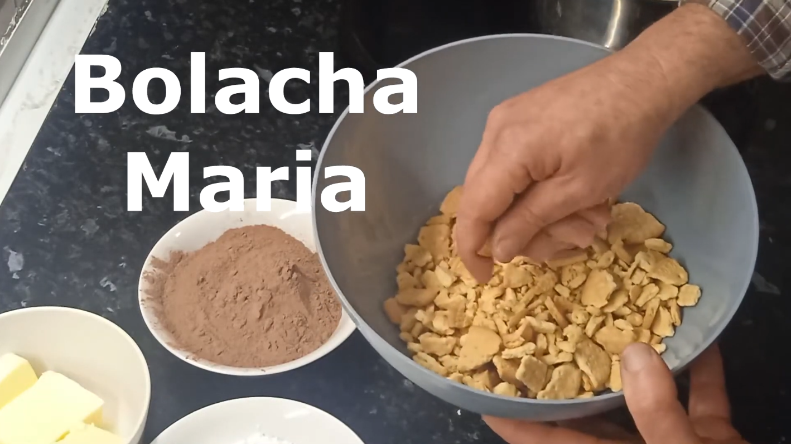
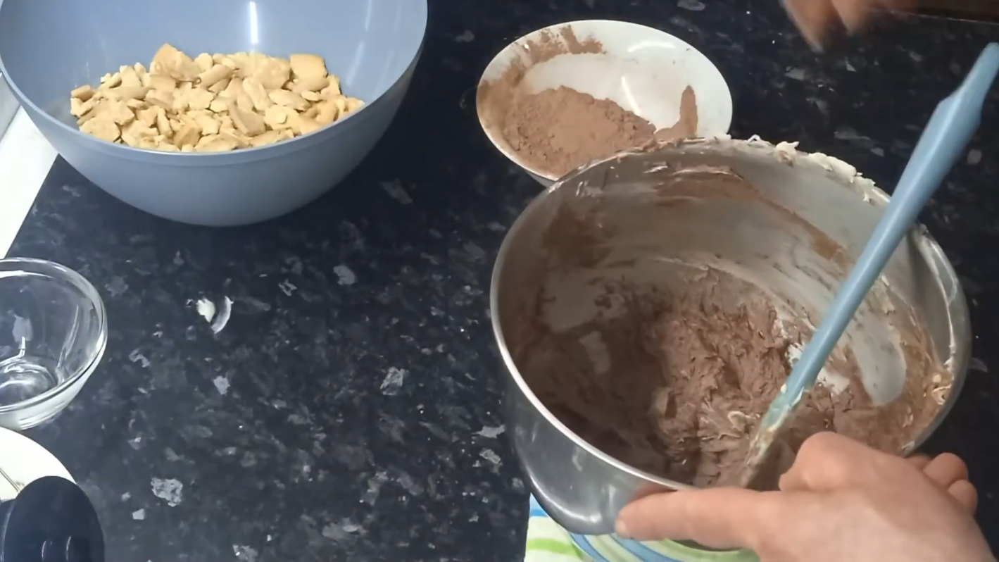
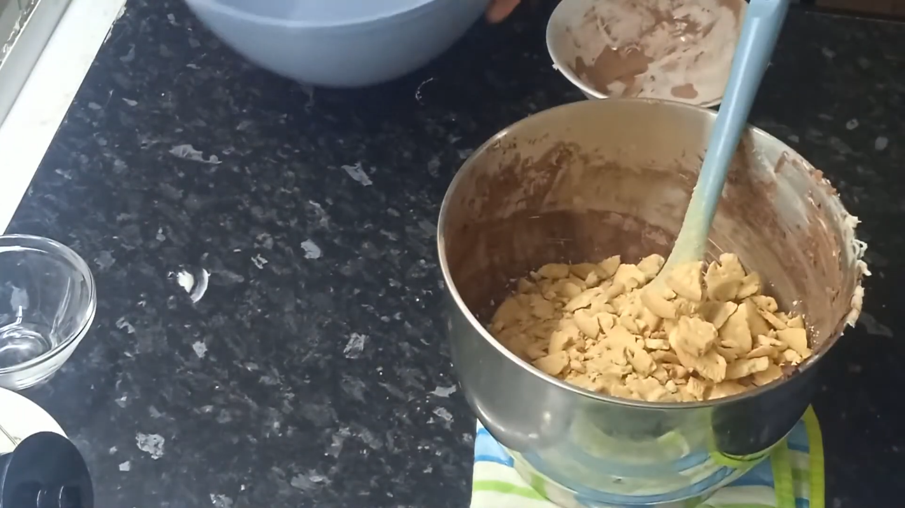
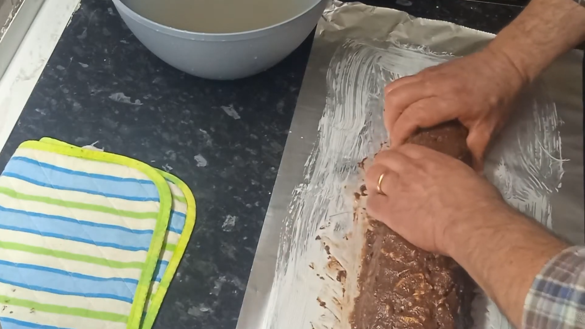

Receita de Slame de Chocolate
8 Porções
- 400g de bolacha maria
- 200g de margarina
- 200g de açúcar
- 200g de achocolatado em pó
- 2 ovos
- Partir as bolachas em pedaços bem miúdos, incluindo alguns bem moídos. Reservar.
- Numa caçarola levar ao lume a margarina e o açúcar. Assim que levantar fervura desligar e mexer para dissolver o açúcar. Juntar o chocolate e mexer bem. Juntar os ovos batidos e mexer rapidamente, para não cozerem.
- Numa tigela grande colocar as bolachas e verter o creme de chocolate. Envolver muito bem.
- Sobre papel alumínio moldar o salame e levar ao frigorífico ate servir.
- NOTAS, MAS NÃO MENOS IMPORTANTES
- Para partir as bolachas pode-se usar uma garrafa para lhes bater numa tigela, ou dentro de um saco plástico dentro de um pano de cozinha ou saca do pão bater com o rolo da massa, ou num almofariz grande esmagar com o pilão;
- Para se ter menos trabalho a moldar o salame, forrar uma forma de bolo inglês, com o papel de alumínio, verter a massa dentro e calcar bem para eliminar espaços vazios.
Fechar com o papel e comprimir. Levar ao frigorífico, podendo depois de frio retirar-se da forma. Usei uma forma comprida canelada em vez da de bolo inglês.



